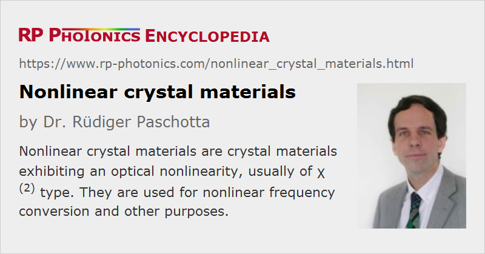

Nonlinear Crystal Materials
Definition: crystal materials exhibiting an optical nonlinearity, usually of χ(2) type
More general term: optical materials
German: nichtlineare Kristallmaterialien
Categories: optical materials, nonlinear optics
How to cite the article; suggest additional literature
Author: Dr. Rüdiger Paschotta
Transparent crystalline crystal materials can exhibit different kinds of optical nonlinearities which are associated with a nonlinear polarization. For example, media with a χ(2) nonlinearity are mainly used for parametric nonlinear frequency conversion (e.g. in frequency doublers and optical parametric oscillators) and for electro-optic modulators, whereas χ(3) nonlinearities lead to the Kerr effect, the Raman effect, and four-wave mixing. In essentially all cases, artificial (rather than naturally occurring) crystals are used.
Relevant Aspects for the Choice of Nonlinear Crystals
Many different properties of a nonlinear crystal can be important for an application e.g. in nonlinear frequency conversion:
- The chromatic dispersion and birefringence properties determine the possibilities for phase matching and the phase-matching bandwidth, angular acceptance (for critical phase matching), etc.
- The magnitude of the effective nonlinear coefficient deff, which depends on the nonlinear tensor components and on the phase-matching configuration, is important particularly if the achievable optical intensities are low.
- Normally, the crystal material should have a high optical transparency for all wavelengths involved.
Additional properties can be relevant for a comparison:
- the material's potential to be periodically poled to achieve quasi-phase matching
- linear absorption, which can cause heating at high optical power levels, so that the phase matching is disturbed, and thermal lensing may occur
- the resistance against optical damage, gray tracking, photodarkening, green-induced infrared absorption, and the like
- the resistance against photorefractive effects (which are often called photorefractive damage, even though this is usually reversible)
- the availability of crystals with consistently good quality, large size and a reasonable price
- the ease of fabricating high-quality anti-reflection coatings on the crystals
- the chemical durability; e.g., some crystal materials are hygroscopic, others undergo chemical changes when heated in a vacuum chamber for application of a dielectric coating
The choice of the most suitable crystal material for a given application is often far from trivial; it should involve the consideration of many aspects. For example, a high nonlinearity for frequency conversion of ultrashort pulses does not help if the interaction length is strongly limited by a large group velocity mismatch and the low damage threshold limits the applicable optical intensities. Also, it can be highly desirable to use a crystal material which can be critically phase-matched at room temperature, because noncritical phase matching often involves the operation of the crystal in a temperature-stabilized crystal oven.
Frequently Used χ(2) Nonlinear Crystal Materials
Lithium niobate (LiNbO3) and lithium tantalate (LiTaO3) are materials with a relatively strong nonlinearity. They are often used for nonlinear frequency conversion and also for electro-optic modulators. Both materials are available in congruent and in stoichiometric form, with important differences concerning periodic poling and photorefractive effects (see below). Lithium niobate and tantalate are the most often used materials in the context of periodic poling; the resulting materials are called PPLN (periodically poled lithium niobate) and PPLT, respectively, or PPSLN and PPSLT for the stoichiometric versions. Both have a relatively low damage threshold, but do not need to be operated at high intensities due to their high nonlinearity. They have a tendency for photorefractive effects, which are detrimental for frequency conversion, but are used for, e.g., holographic data storage in Fe-doped LiNbO3 crystals. The tendency for “photorefractive damage” depends strongly on the material composition; e.g. it can be reduced via MgO doping and by using a stoichiometric composition.
Potassium niobate (KNbO3) has a high nonlinearity. It is used for, e.g., frequency doubling to blue wavelengths and in piezoelectric applications.
Potassium titanyl phosphate (KTP, KTiOPO4) may be flux-grown (cheaper) or hydrothermal (better for high powers, lower tendency for gray tracking → photodarkening). The “KTP family” of materials also includes KTA (KTiOAsO4), RTP (RbTiOPO4) and RTA (RbTiAsPO4). These materials tend to have relatively high nonlinearities and are suitable for periodic poling.
Potassium dihydrogen phosphate (KDP, KH2PO4) and potassium dideuterium phosphate (KD*P or DKDP, KD2PO4, exhibiting extended infrared transmission), are available in large sizes at low price. They exhibit good homogeneity over large volumes and have a high damage threshold, but are hygroscopic and have a low nonlinearity.
There are a number of borates, the most important ones being lithium triborate (LiB3O5 = LBO), cesium lithium borate (CLBO, CsLiB6O10), β-barium borate (β-BaB2O4 = BBO, strongly hygroscopic, often used in Pockels cells), bismuth triborate (BiB3O6 = BIBO), and cesium borate (CSB3O5 = CBO). Yttrium calcium oxyborate (YCOB) and YAl3(BO3)4 (YAB) are also available in rare-earth-doped form for use as a laser gain medium, and can then simultaneously be used for generating and frequency-converting laser light. Less frequently used are strontium beryllium borate (Sr2Be2B2O7 = SBBO) and K2Al2B2O7 (KAB). LBO, BBO, CLBO, CBO and other borate crystals are suitable for the generation of relatively short wavelengths, e.g. in green and blue laser sources, and for UV generation (→ ultraviolet lasers), because their band gap energy is relatively high, the crystals are relatively resistant to UV light, and there are suitable phase-matching options. Borates such as LBO and BBO also work well in broadly tunable optical parametric oscillators and optical parametric chirped-pulse amplification.
For mid-infrared (and partly also terahertz) generation, one requires crystal materials with a transparency range extending far into the infrared spectral region. The most important of these media are zinc germanium diphosphide (ZGP, ZnGeP2), silver gallium sulfide and selenide (AgGaS2 and AgGaSe2), gallium selenide (GaSe), and cadmium selenide (CdSe). Gallium arsenide (GaAs) has also become useful for mid-infrared applications, since it is possible to obtain quasi-phase matching in orientation-patterned GaAs [13, 21].
Lifetime of Nonlinear Crystals
In many cases, a nonlinear crystal used for nonlinear frequency conversion has a very long lifetime, which is longer than that of the whole laser system. The crystal material is essentially not modified during operation. However, a reduced crystal lifetime can occur under various circumstances:
- Excessive optical intensities during operation may instantly damage a crystal. Unfortunately, nonlinear crystals often need to be operated not far from their optical damage threshold in order to achieve a sufficiently high conversion efficiency. This implies a trade-off between conversion efficiency and crystal lifetime. Note that even if the nominal intensity is below the nominal damage threshold, there may be problems due to fluctuations of the beam power or local intensity (e.g., if a beam profile has “hot spots”), or due to isolated defects in a crystal, which are more sensitive than the regular crystal material.
- Even well below the threshold for instant damage, some crystal materials exhibit a continuous degradation within the used volume, e.g. in the form of “gray tracking”. Such phenomena are particularly common for operation with ultraviolet light. Note that a gradual degradation can also lead into instant catastrophic damage via excessive heat generation.
- Hygroscopic crystal materials deteriorate when they are not always kept in sufficiently dry air (or a dry purge gas). This applies e.g. to KDP and BBO, and in a lesser extent to LBO. It can be helpful to keep such a crystal at a somewhat elevated temperature, which makes it easier to keep it dry.
- Operation of nonlinear crystals at temperatures below room temperature (in order to achieve phase matching) is generally problematic, as it may lead to condensation of water on the crystal surfaces if the surrounding air is not very dry. Even if the crystal material or coating is not sensitive to water, small water droplets may focus laser radiation more tightly than under normal operation, and thus damage the crystal material.
- Crystals which are non-critically phase-matched in a crystal oven may exhibit problems when the crystal temperature is changed too rapidly or too often. In particular, anti-reflection coatings may be damaged due to different thermal expansion coefficients of the involved materials.
Crystal lifetime can also be strongly dependent on the material quality, although certain degradation phenomena appear to be intrinsic limitations of the material.
For high-power UV generation, nonlinear crystals may become consumables: they need to be replaced quite often within the lifetime of the whole laser system (e.g., every few hundred hours of operation). Often, several problematic aspects come together in the regime UV generation: crystal materials are generally more sensitive to ultraviolet light (having high photon energies), exhibit a higher absorption in that regime, and in case of ultrashort pulses the high group velocity mismatch enforces the use of a shorter crystal, which requires high optical intensities for a given conversion efficiency.
Very Thin Nonlinear Crystals
For some applications, nonlinear crystals with a very small thickness of well below 1 mm are used. This may be necessary for minimizing the group velocity mismatch, e.g. in optical autocorrelators for extremely short pulses.
A common method for obtaining ultrathin crystals is to first optically contact a thicker nonlinear crystal with some substrate (e.g. of fused silica) and then to polish the crystal down to the required thickness of e.g. 20 μm. The group velocity mismatch in the thicker substrate material may not matter, as the nonlinear interaction takes place only in the thin crystal. The substrate only serves to mechanically stabilize the thin nonlinear crystal.
It is also possible to fabricate free-standing crystals with a thickness of only 100 μm, sometimes even below 30 μm.
Suppliers
The RP Photonics Buyer's Guide contains 72 suppliers for nonlinear crystal materials. Among them:
Questions and Comments from Users
Here you can submit questions and comments. As far as they get accepted by the author, they will appear above this paragraph together with the author’s answer. The author will decide on acceptance based on certain criteria. Essentially, the issue must be of sufficiently broad interest.
Please do not enter personal data here; we would otherwise delete it soon. (See also our privacy declaration.) If you wish to receive personal feedback or consultancy from the author, please contact him e.g. via e-mail.
By submitting the information, you give your consent to the potential publication of your inputs on our website according to our rules. (If you later retract your consent, we will delete those inputs.) As your inputs are first reviewed by the author, they may be published with some delay.
Bibliography
| [1] | R. S. Craxton et al., “Basic properties of KDP related to the frequency conversion of 1 μm laser radiation”, IEEE J. Quantum Electron. 17 (9), 1782 (1981), doi:10.1109/JQE.1981.1071349 |
| [2] | C. Chen et al., “New nonlinear-optical crystal: LiB3O5”, J. Opt. Soc. Am. B 6 (4), 616 (1989), doi:10.1364/JOSAB.6.000616 |
| [3] | C. Chen et al., “A new-type ultraviolet SHG crystal β-BaB2O4”, Sci. Sin. (Ser. B) 28, 235 (1985) |
| [4] | J. D. Bierlein and H. Vanherzeele, “Potassium titanyl phosphate: properties and new applications”, J. Opt. Soc. Am. B 6 (4), 622 (1989), doi:10.1364/JOSAB.6.000622 |
| [5] | S. Lin et al., “The nonlinear optical characteristics of a LiB3O5 crystal”, J. Appl. Phys. 67 (2), 634 (1990), doi:10.1063/1.345765 |
| [6] | R. C. Eckardt et al., “Absolute and relative nonlinear optical coefficients of KDP, KD*P, BaB2O4, LiIO3, MgO:LiNbO3, and KTP measured by phase-matched second-harmonic generation”, IEEE J. Quantum Electron. 26 (5), 922 (1990), doi:10.1109/3.55534 |
| [7] | D. N. Nikogosyan, “Beta barium borate (BBO), a review of its properties and applications”, Appl. Phys. A 52, 359 (1991), doi:10.1007/BF00323647 |
| [8] | S. P. Velsko et al., “Phase-matched harmonic generation in lithium triborate (LBO)”, IEEE J. Quantum Electron. 27 (9), 2182 (1991), doi:10.1109/3.135177 |
| [9] | C. Chen et al., “Design and synthesis of an ultraviolet-transparent nonlinear optical crystal Sr2Be2B2O7”, Nature 373, 322 (1995), doi:10.1038/373322a0 |
| [10] | Y. Wu et al., “CsB3O5: a new nonlinear optical crystal”, Appl. Phys. Lett. 62, 2614 (1993), doi:10.1063/1.109262 |
| [11] | D. N. Nikogosyan, “Lithium triborate (LBO). A review of its properties and applications”, Appl. Phys. A 58, 181 (1994), doi:10.1007/BF00324374 |
| [12] | Y. Mori et al., “New nonlinear optical crystal: cesium lithium borate”, Appl. Phys. Lett. 67, 1818 (1995), doi:10.1063/1.115413 |
| [13] | S. J. B. Yoo et al., “Wavelength conversion by difference-frequency generation in AlGaAs waveguides with periodic domain inversion achieved by wafer bonding”, Appl. Phys. Lett. 68, 2609 (1996), doi:10.1063/1.116197 |
| [14] | I. Shoji et al., “Absolute scale of second-order nonlinear-optical coefficients”, J. Opt. Soc. Am. B 14 (9), 2268 (1997), doi:10.1364/JOSAB.14.002268 |
| [15] | T. Iwai et al., “Crystal growth and optical characterization of rare-earth (Re) calcium oxyborate ReCa4O(BO3)3 (Re = Y or Gd) as new nonlinear optical material”, Jpn. J. Appl. Phys. 36, L276 (1997), doi:10.1143/JJAP.36.L276 |
| [16] | H. Hellwig et al., “Exceptional large nonlinear optical coefficients in the monoclinic bismuth borate BiB3O6”, Solid State Commun. 109, 249 (1998), doi:10.1016/S0038-1098(98)00538-9 |
| [17] | Z.-G. Hu et al., “A new nonlinear optical borate crystal K2Al2B2O7 (KAB)”, Jpn. J. Appl. Phys. 37, L1093 (1998), doi:10.1143/JJAP.37.L1093 |
| [18] | N. Ye et al., “New nonlinear optical crystal K2Al2B2O7”, J. Opt. Soc. Am. B 17 (5), 764 (2000), doi:10.1364/JOSAB.17.000764 |
| [19] | P. Kumbhakar and T. Kobayashi, “Nonlinear optical properties of Li2B4O7 (LB4) crystal for the generation of tunable ultra-fast laser radiation by optical parametric amplification”, Appl. Phys. B 78, 165 (2004), doi:10.1007/s00340-003-1364-7 |
| [20] | M. Katz et al., “Vapor-transport equilibrated near-stoichiometric lithium tantalate for frequency-conversion applications”, Opt. Lett. 29 (15), 1775 (2004), doi:10.1364/OL.29.001775 |
| [21] | T. Skauli et al., “Measurement of the nonlinear coefficient of orientation-patterned GaAs and demonstration of highly efficient second-harmonic generation”, Opt. Lett. 27 (8), 628 (2002), doi:10.1364/OL.27.000628 |
| [22] | Li Wang and Y. Men, “Comparison study of CsLiB6O10 and β-BaB2O4 as nonlinear media for optical parametric oscillators”, Appl. Opt. 42 (15), 2720 (2003), doi:10.1364/AO.42.002720 |
| [23] | M. Ghotbi and M. Ebrahim-Zadeh, “Optical second harmonic generation properties of BiB3O6”, Opt. Express 12 (24), 6002 (2004), doi:10.1364/OPEX.12.006002 |
| [24] | S. V. Tovstonog et al., “Thermal effects in high-power CW second harmonic generation in Mg-doped stoichiometric lithium tantalate”, Opt. Express 16 (15), 11294 (2008), doi:10.1364/OE.16.011294 |
| [25] | H. Ishizuki and T. Taira, “Mg-doped congruent LiTaO3 crystal for large-aperture quasi-phase matching device”, Opt. Express 16 (21), 16963 (2008), doi:10.1364/OE.16.016963 |
| [26] | D. N. Nikogosyan, Nonlinear Optical Crystals: A Complete Survey, Springer, Berlin (2005) |
See also: nonlinear frequency conversion, frequency doubling, effective nonlinear coefficient, ultraviolet lasers, optical parametric oscillators, periodic poling, phase matching, birefringent phase matching, quasi-phase matching, orientation-patterned semiconductors, electro-optic modulators, Pockels cells, crystal ovens, The Photonics Spotlight 2007-05-26
and other articles in the categories optical materials, nonlinear optics

This encyclopedia is authored by Dr. Rüdiger Paschotta, the founder and executive of RP Photonics Consulting GmbH. How about a tailored training course from this distinguished expert at your location? Contact RP Photonics to find out how his technical consulting services (e.g. product designs, problem solving, independent evaluations, training) and software could become very valuable for your business!
|  |
If you like this page, please share the link with your friends and colleagues, e.g. via social media:
These sharing buttons are implemented in a privacy-friendly way!